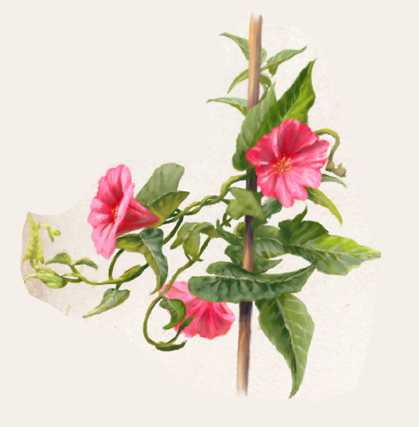

In Steppen und Wäldern nördlich der Linie Thorwal bis Festum wächst Thonnys. Die meiste Zeit des Jahres ähnelt die unauffällige Kletterpflanze der gewöhnlichen Ackerwinde. Wie diese hat Thonnys pfeilförmige Blätter, wenngleich sie kleiner sind und auch fleischiger als vorgenannte. Die Blätter sind von besonderem Interesse und werden von Peraine bis Travia geerntet. Von Ingerimm bis Rahja zeigt Thonnys trichterförmige und geruchslose rote Blüten, deren Erscheinen es erheblich erleichtert, die Pflanze zu finden. Die Wurzeln von Thonnys reichen tief in den Boden, reißen jedoch leicht ab, und auch bei guter Pflege treibt ein abgerissener Spross nicht noch einmal aus. Die Elfen entdeckten die Nutzbarkeit von Thonnys und begegnen der Winde von jeher mit großer Wertschätzung, denn sie ermöglicht es, Lebens- in Astralenergie umzuwandeln. Thonnysblätter können frisch oder getrocknet genossen werden. Letzteres hat jedoch die unangenehme Nebenwirkung, dass die Einnahme zu kurzfristiger Übelkeit führt. Darüber hinaus wird gerade getrocknetes Thonnys in der Alchimie geschätzt. Zu feinem Pulver zermahlen, ist es ein fester Bestandteil des Astraltranks. Auch in Tränken, die den Willen beeinflussen, oder in solchen, die aufputschend wirken, wird es verwendet.
Die ganze Pflanze enthält zudem Stoffe, die bei Zauberern zu lebhaften Träumen und in ekstatischen Zuständen gar zu Visionen führen, was sie gerade bei Hexenfesten sehr beliebt macht.
Alternative Namen: Thaunisander-Blatt
Verbreitung:
Landschaftstyp: Grasländer, Heiden und Steppen, Wälder
Regionen: Nördliches Hochland (Strauchsteppe; selten), Nördliche Grasländer und Steppen (selten), Wälder des Nordens (sehr selten)
Suchschwierigkeit: -4
Bestimmungsschwierigkeit: -4
Anwendungen: 1/1/2/2/3/3
Wirkung:
Roh:
Berührung: keine
Einatmung: keine
Verzehr: Thonnys ermöglicht Zauberern die Astrale Meditation, ohne dass sie dafür die Sonderfertigkeit beherrschen müssen.
LeP werden dadurch während mindestens fünfminütiger Meditation 1:1 in AsP umgewandelt, sofern eine Probe auf Selbstbeherrschung (Störungen ignorieren) gelingt.
Es können maximal QS x 3 LeP in AsP umgewandelt werden. Unabhängig vom Erfolg verliert der Anwender danach weitere 1W3 LeP.
Wer die Sonderfertigkeit besitzt, kann diesen zusätzlichen LeP-Verlust durch die Anwendung von Thonnys unterdrücken.
Verarbeitet: siehe Rezepte
Preis: 16 / 32 Silbertaler
Rezepte:
Elixiere: Willenstrunk, Zaubertrank
Alchimistische Rauschmittel: Aufputschmittel
Volksbrauchtum:
Gerade Hexen des Nordens sollen Thonnys auch als Heilmittel für Lebewesen ohne arkane Kräfte nutzen.
Ein aus den Blättern gepresster und filtrierter Saft wirke sich stärkend auf das Herz aus, was insbesondere für herzkranke Menschen ein wahrer Segen sei.
Doch nur selten gelangt ein solcher Saft in die Läden von Kräuterhändlern, die sich meist ganz der anderen, zuverlässigeren Wirkung verschrieben haben.
Haltbarkeit:
Roh: siehe Haltbarmachung
Verarbeitet: Gerebelter Thonnys 1 Monat